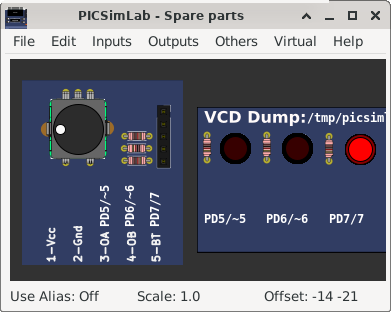
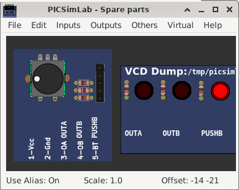

9.1 Pin Alias
The pin alias support allows the user to place custom names on the pins making it easy to identify according to the project.
When off the normal names are shown:

When on the alias names are shown:

To use:
- active the menu “Edit->Clear pin alias” to reset the pin alias file
- active the menu “Edit->Edit pin alias” to open pin alias file, change the names, save and close.
- active the menu “Edit->Reload pin alias” to load new alias
- active the menu “Edit->Toggle pin alias” to show new alias